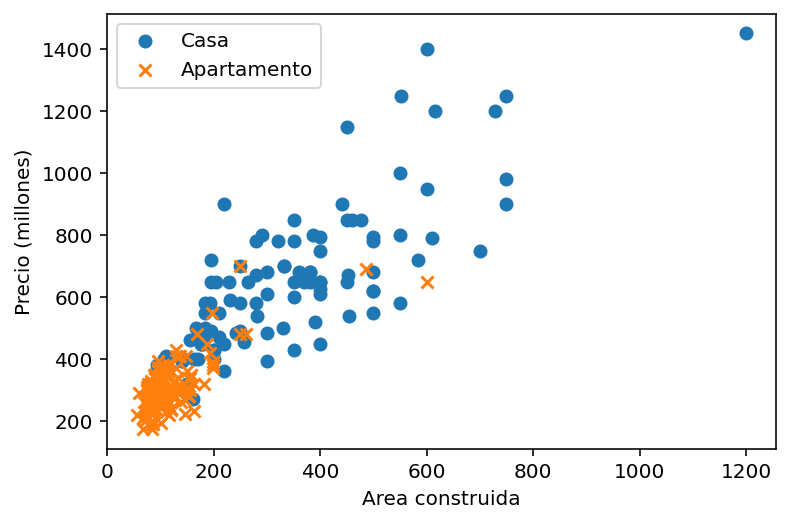
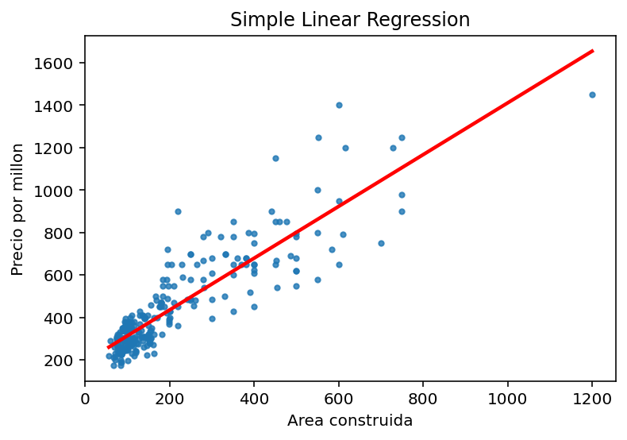
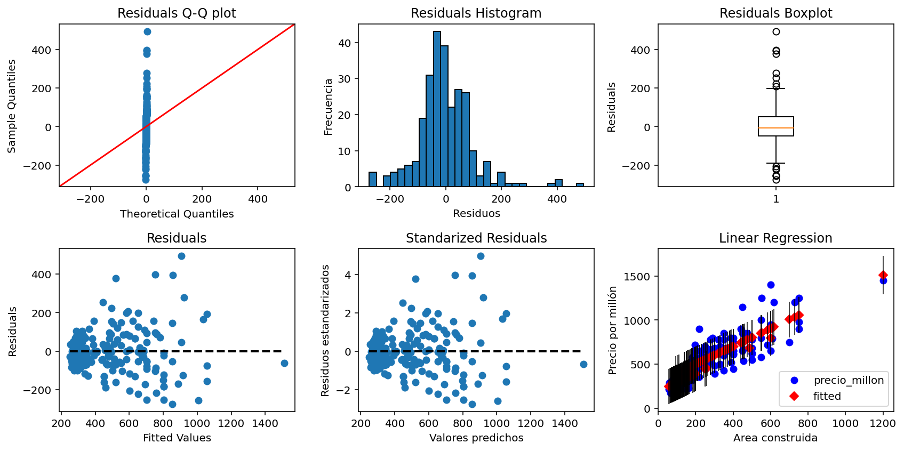

Code
import pandas as pd
import statsmodels.formula.api as smf
import statsmodels.api as sm
import matplotlib.pyplot as plt
import seaborn as sns
import numpy as npMade By: Santiago Uribe (suribe06@javerianacali.edu.co)
import pandas as pd
import statsmodels.formula.api as smf
import statsmodels.api as sm
import matplotlib.pyplot as plt
import seaborn as sns
import numpy as npdf = pd.read_excel('Datos_Vivienda.xlsx', sheet_name='Datos Vivienda')
dim_df = df.shape
print(f"The dataset consists of {dim_df[0]} rows and {dim_df[1]} columns")The dataset consists of 8322 rows and 12 columnsLet’s check how much missing data there is by columns
# Missing values by column
df.isnull().sum()Zona 3
piso 2638
Estrato 3
precio_millon 2
Area_contruida 3
parqueaderos 1605
Banos 3
Habitaciones 3
Tipo 3
Barrio 3
cordenada_longitud 3
Cordenada_latitud 3
dtype: int64# delete records that have more than 6 missing data in their columns
df = df.dropna(thresh=len(df.columns)-6)
# Obtain all the variants of "El Ingenio" in the list of districts
df.loc[df['Barrio'].str.contains('ingenio', case=False), 'Barrio'] = 'El Ingenio'dim_df = df.shape
print(f"The dataset consists of {dim_df[0]} rows and {dim_df[1]} columns")The dataset consists of 8319 rows and 12 columns# Missing values by column
df.isnull().sum()Zona 0
piso 2635
Estrato 0
precio_millon 0
Area_contruida 0
parqueaderos 1602
Banos 0
Habitaciones 0
Tipo 0
Barrio 0
cordenada_longitud 0
Cordenada_latitud 0
dtype: int64Since the ‘piso’ and ‘parqueaderos’ attributes will not be used in this study, we eliminated the columns by having so much missing data, 32% and 20% respectively.
df.drop('piso', axis=1, inplace=True)
df.drop('parqueaderos', axis=1, inplace=True)Let’s look at some graphs and measures of central tendency of our variables of interest.
df.describe()| Estrato | precio_millon | Area_contruida | Banos | Habitaciones | cordenada_longitud | Cordenada_latitud | |
|---|---|---|---|---|---|---|---|
| count | 8319.000000 | 8319.000000 | 8319.000000 | 8319.000000 | 8319.000000 | 8319.000000 | 8319.000000 |
| mean | 4.633610 | 433.904436 | 174.934938 | 3.111311 | 3.605361 | -76.528606 | 3.417644 |
| std | 1.029222 | 328.665025 | 142.964126 | 1.428210 | 1.459537 | 0.017398 | 0.042638 |
| min | 3.000000 | 58.000000 | 30.000000 | 0.000000 | 0.000000 | -76.589150 | 3.333000 |
| 25% | 4.000000 | 220.000000 | 80.000000 | 2.000000 | 3.000000 | -76.541580 | 3.380795 |
| 50% | 5.000000 | 330.000000 | 123.000000 | 3.000000 | 3.000000 | -76.530000 | 3.416000 |
| 75% | 5.000000 | 540.000000 | 229.000000 | 4.000000 | 4.000000 | -76.518890 | 3.452000 |
| max | 6.000000 | 1999.000000 | 1745.000000 | 10.000000 | 10.000000 | -76.463000 | 3.497700 |
#Separate attributes by type
obj_attributes = df.select_dtypes(include=['object']).columns.to_list()
float_attributes = df.select_dtypes(include=['float']).columns.to_list()fig, axs = plt.subplots(1, 2, figsize=(8,4))
axs = axs.ravel()
for i, col in enumerate(obj_attributes):
if col != 'Barrio':
sns.countplot(x=col, data=df, ax=axs[i], edgecolor='black')
axs[i].set_title(col)
axs[i].set_xticklabels(axs[i].get_xticklabels(), rotation=90)
plt.tight_layout()
plt.show()Let’s see the proportion of neighborhoods in the dataset.
from matplotlib.colors import ListedColormap
# Obtain the housing count by neighborhood
count_by_barrio = df['Barrio'].value_counts()
# Create labels
labels_ = count_by_barrio.index[:10].tolist()
# Calculate the sum of the smallest values and add it to the list of labels
sum_low_values = count_by_barrio.iloc[10:].sum()
labels_.append('Otros')
# Create pie chart
fig = plt.figure(facecolor='white')
colores = sns.color_palette("Set3", n_colors=11)
paleta_colores = ListedColormap(colores)
plt.pie(count_by_barrio[:10].tolist() + [sum_low_values], labels=labels_, autopct='%1.1f%%', colors=paleta_colores.colors)
plt.axis('equal')
plt.title('Distribución por barrio')
plt.show()fig, axs = plt.subplots(2, 4, figsize=(10,5))
axs = axs[:8].ravel()
for i, col in enumerate(float_attributes):
if col != 'Estrato':
axs[i].hist(df[col], edgecolor='black')
axs[i].set_title(col)
else:
axs[i].bar(df[col].value_counts().index, df[col].value_counts().values, edgecolor='black')
plt.tight_layout()
plt.show()import matplotlib.patches as mpatches
fliers = dict(markerfacecolor='m', marker='D') #atypical data
mean_ = dict(markerfacecolor='green', marker='D')
mean_artist = mpatches.Patch(facecolor='green', label='Mean')
ad_artist = mpatches.Patch(color='m', label='Atypical Data')
fig, axs = plt.subplots(2, 4, figsize=(10,5))
axs = axs[:8].ravel()
for i, col in enumerate(float_attributes):
bp = axs[i].boxplot(df[col], vert=False, flierprops=fliers, showmeans=True, meanprops=mean_)
axs[i].legend(handles=[mean_artist, ad_artist], loc='upper left', fontsize=8)
axs[i].set_title(col)
plt.tight_layout()
plt.show()sns.heatmap(df.corr(), square=True, annot=True)<Axes: >As can be seen in the correlation table, the variables ‘Area_contruida’ and ‘precio_millon’ have a direct positive relationship, of approximately 0.7
df_el_ingenio = df[df['Barrio'] == 'El Ingenio'][['precio_millon', 'Area_contruida']]
dim_df = df_el_ingenio.shape
print(f"The dataset of only 'El Inegnio' consists of {dim_df[0]} rows and {dim_df[1]} columns")The dataset of only 'El Inegnio' consists of 268 rows and 2 columns# Create the SLR model
modelo = smf.ols('precio_millon ~ Area_contruida', data=df_el_ingenio).fit()
print(modelo.summary()) OLS Regression Results
==============================================================================
Dep. Variable: precio_millon R-squared: 0.780
Model: OLS Adj. R-squared: 0.779
Method: Least Squares F-statistic: 944.1
Date: Tue, 11 Apr 2023 Prob (F-statistic): 1.73e-89
Time: 19:07:50 Log-Likelihood: -1632.8
No. Observations: 268 AIC: 3270.
Df Residuals: 266 BIC: 3277.
Df Model: 1
Covariance Type: nonrobust
==================================================================================
coef std err t P>|t| [0.025 0.975]
----------------------------------------------------------------------------------
Intercept 192.0000 10.462 18.352 0.000 171.401 212.599
Area_contruida 1.2187 0.040 30.726 0.000 1.141 1.297
==============================================================================
Omnibus: 57.232 Durbin-Watson: 1.878
Prob(Omnibus): 0.000 Jarque-Bera (JB): 161.407
Skew: 0.940 Prob(JB): 8.93e-36
Kurtosis: 6.305 Cond. No. 420.
==============================================================================
Notes:
[1] Standard Errors assume that the covariance matrix of the errors is correctly specified.The SLR model is given by:
\[ Y = 1.21 X + 192.0 \]
Where \(Y\) is ‘precio_millon’ and ‘X’ is ‘Area_contruida’. The R-squared value of the model is approximately 0.78, which indicates that the proportion of the variability in the dependent variable is well explained by the independent variable. We can see that the standard error for both the intercept and the slope are small so the coefficients are accurate.
plt.scatter(df_el_ingenio.Area_contruida, df_el_ingenio.precio_millon)
plt.plot(df_el_ingenio.Area_contruida, modelo.predict(), color='red', linewidth=2)
plt.xlabel('Area construida')
plt.ylabel('Precio por millon')
plt.title('Simple Linear Regression')
plt.show()from scipy.stats import shapiro
from statsmodels.stats.diagnostic import het_breuschpagan
def checkModelAssumptions(model):
residuos = model.resid
fig, axs = plt.subplots(nrows=2, ncols=3, figsize=(12, 6))
#QQ plot
sm.qqplot(residuos, line='45', ax=axs[0,0])
axs[0,0].set_title('Residuals Q-Q plot')
#Residuals Histogram
axs[0,1].hist(residuos, bins=30, edgecolor='black')
axs[0,1].set_xlabel('Residuos')
axs[0,1].set_ylabel('Frecuencia')
axs[0,1].set_title('Residuals Histogram')
#Reiduals Boxplot
axs[0,2].boxplot(residuos)
axs[0,2].set_ylabel('Residuals')
axs[0,2].set_title('Residuals Boxplot')
#Residuals
axs[1,0].scatter(model.fittedvalues, residuos)
axs[1,0].plot([min(model.fittedvalues), max(model.fittedvalues)], [0, 0], 'k--', lw=2)
axs[1,0].set_xlabel('Fitted Values')
axs[1,0].set_ylabel('Residuals')
axs[1,0].set_title('Residuals')
#Standarized residuals
predicciones = model.predict()
residuos_estandarizados = model.get_influence().resid_studentized_internal
axs[1,1].scatter(predicciones, residuos_estandarizados)
axs[1,1].plot([min(predicciones), max(predicciones)], [0, 0], 'k--', lw=2)
axs[1,1].set_xlabel('Valores predichos')
axs[1,1].set_ylabel('Residuos estandarizados')
axs[1,1].set_title('Standarized Residuals')
#Plot fit
sm.graphics.plot_fit(model, 'Area_contruida', ax=axs[1,2])
axs[1,2].set_xlabel("Area construida")
axs[1,2].set_ylabel("Precio por millón")
axs[1,2].set_title("Linear Regression")
plt.tight_layout()
plt.show()
#Normality test
print('================= Normality test =================')
stat, p = shapiro(residuos)
print('Estadística de prueba:', stat)
print('Valor p:', p)
if p <= 0.05: print("Se rechaza H0")
else: print("No se rechaza H0")
#Homoscedasticity test
print('================= Homoscedasticity test =================')
lm, lm_pvalue, fvalue, f_pvalue = het_breuschpagan(residuos, model.model.exog)
print('Lagrange multiplier statistic:', lm)
print('p-value', lm_pvalue)
print('F value:', fvalue)
print('F p-value', f_pvalue)
if lm_pvalue <= 0.05: print("Se rechaza H0")
else: print("No se rechaza H0")checkModelAssumptions(modelo)================= Normality test =================
Estadística de prueba: 0.9344847798347473
Valor p: 1.5990865298576296e-09
Se rechaza H0
================= Homoscedasticity test =================
Lagrange multiplier statistic: 53.90972228889621
p-value 2.0991640940017183e-13
F value: 66.98102446388039
F p-value 1.1443963502530689e-14
Se rechaza H0Analysis: - Normality test: Since the null hypothesis is rejected, the residuals are not from a normal distribution. It can also be verified that the QQ plot does not conform to a normal distribution. - Homoscedasticity test: Since H0 is rejected, it means that there is sufficient evidence to conclude that the variance of the errors is not constant and, therefore, that there is heteroscedasticity in the model. - Independecy and lineality: In both residual plots we can see that the residuals follow a tendency to cluster to the left, so the model variables are not linear.
df2 = df[df['Barrio'] == 'El Ingenio'][['precio_millon', 'Area_contruida', 'Tipo']]
df_casa = df2[df2['Tipo'] == 'Casa']
df_apto = df2[df2['Tipo'] == 'Apartamento']
plt.scatter(df_casa['Area_contruida'], df_casa['precio_millon'], marker='o', label='Casa')
plt.scatter(df_apto['Area_contruida'], df_apto['precio_millon'], marker='x', label='Apartamento')
# Configurar la gráfica
plt.xlabel('Area construida')
plt.ylabel('Precio (millones)')
plt.legend()
plt.show()
In this case, a model could have the following structure: \[ Y = \beta_0 + \beta_1 X_1 + \beta_2 X_2 + \varepsilon \] where \(X_2\) can take the values of zero or one, according to the type of housing. For example: \[ X_2 = \begin{cases} 0, & \text{si la vivienda es una casa.} \\ 1, & \text{si la vivienda es un apartamento.} \end{cases} \]
#Create the dummy column
df_el_ingenio['Tipo_Dummy'] = df2["Tipo"].map({"Casa": 0, "Apartamento": 1})#df_dummies = pd.get_dummies(df2['Tipo'], prefix='Tipo')
#df_el_ingenio = pd.concat([df_el_ingenio, df_dummies], axis=1)# Ajustar el modelo de regresión lineal
modelo2 = smf.ols(formula='precio_millon ~ Area_contruida + Tipo_Dummy', data=df_el_ingenio).fit()
print(modelo2.summary()) OLS Regression Results
==============================================================================
Dep. Variable: precio_millon R-squared: 0.808
Model: OLS Adj. R-squared: 0.807
Method: Least Squares F-statistic: 558.3
Date: Tue, 11 Apr 2023 Prob (F-statistic): 9.50e-96
Time: 19:07:52 Log-Likelihood: -1614.5
No. Observations: 268 AIC: 3235.
Df Residuals: 265 BIC: 3246.
Df Model: 2
Covariance Type: nonrobust
==================================================================================
coef std err t P>|t| [0.025 0.975]
----------------------------------------------------------------------------------
Intercept 299.1564 19.811 15.100 0.000 260.148 338.164
Area_contruida 1.0097 0.050 20.169 0.000 0.911 1.108
Tipo_Dummy -105.6143 16.975 -6.222 0.000 -139.038 -72.191
==============================================================================
Omnibus: 63.550 Durbin-Watson: 1.921
Prob(Omnibus): 0.000 Jarque-Bera (JB): 232.432
Skew: 0.950 Prob(JB): 3.37e-51
Kurtosis: 7.148 Cond. No. 1.08e+03
==============================================================================
Notes:
[1] Standard Errors assume that the covariance matrix of the errors is correctly specified.
[2] The condition number is large, 1.08e+03. This might indicate that there are
strong multicollinearity or other numerical problems.The model is given by: \[ Y = 1.00 X_1 - 105.61 X_2 + 299.15 \]
# Graficar el modelo
sns.regplot(x='Area_contruida', y='precio_millon', data=df_el_ingenio, ci=None, scatter_kws={'s': 10}, line_kws={'color': 'red'})
plt.xlabel('Area construida')
plt.ylabel('Precio por millon')
plt.title('Simple Linear Regression')
plt.show()
We performed the ANOVA of the model
anova_results = sm.stats.anova_lm(modelo2, typ=2)
print(anova_results) sum_sq df F PR(>F)
Area_contruida 4.115414e+06 1.0 406.782956 1.862197e-55
Tipo_Dummy 3.916221e+05 1.0 38.709397 1.910241e-09
Residual 2.680999e+06 265.0 NaN NaNIn particular, the variable “Area_contruida” has an F-value of 406.78 with a p-value of practically zero, suggesting that it is highly significant in explaining the variability in “Precio_millon”. Similarly, the variable “Tipo_Dummy” has an F-value of 38.70 and a p-value of practically zero, suggesting that it is also significant in explaining the variability in “Precio_millon”.
checkModelAssumptions(modelo2)
================= Normality test =================
Estadística de prueba: 0.9257198572158813
Valor p: 2.579057245544192e-10
Se rechaza H0
================= Homoscedasticity test =================
Lagrange multiplier statistic: 49.262871586960415
p-value 2.007720962860301e-11
F value: 29.84098096481705
F p-value 2.0505571951861922e-12
Se rechaza H0data = pd.read_csv('datosME.txt', header=None, delim_whitespace=True, names=['Masa', 'Edad'])
#Center the data
x_mean = data['Edad'].mean()
data['xi'] = data['Edad'] - x_mean
data['xi2'] = data['xi']**2modelo = smf.ols(formula='Masa ~ xi + np.power(xi, 2)', data=data).fit()xi_range = np.linspace(data['xi'].min(), data['xi'].max(), 500)
y_pred = modelo.predict(exog=dict(xi=xi_range, xi2=xi_range**2))
plt.scatter(data['xi'], data['Masa'])
plt.plot(xi_range, y_pred, color='red')
plt.xlabel('xi')
plt.ylabel('Masa')
plt.show()print(modelo.summary()) OLS Regression Results
==============================================================================
Dep. Variable: Masa R-squared: 0.763
Model: OLS Adj. R-squared: 0.755
Method: Least Squares F-statistic: 91.84
Date: Tue, 11 Apr 2023 Prob (F-statistic): 1.48e-18
Time: 19:07:54 Log-Likelihood: -208.56
No. Observations: 60 AIC: 423.1
Df Residuals: 57 BIC: 429.4
Df Model: 2
Covariance Type: nonrobust
===================================================================================
coef std err t P>|t| [0.025 0.975]
-----------------------------------------------------------------------------------
Intercept 82.9357 1.543 53.745 0.000 79.846 86.026
xi -1.1840 0.089 -13.358 0.000 -1.361 -1.006
np.power(xi, 2) 0.0148 0.008 1.776 0.081 -0.002 0.032
==============================================================================
Omnibus: 1.630 Durbin-Watson: 2.459
Prob(Omnibus): 0.443 Jarque-Bera (JB): 1.395
Skew: 0.214 Prob(JB): 0.498
Kurtosis: 2.387 Cond. No. 275.
==============================================================================
Notes:
[1] Standard Errors assume that the covariance matrix of the errors is correctly specified.The parameter xi is the coefficient associated with the independent variable xi, which is the centered age. The negative value of -1.1840 indicates that there is a negative relationship between age and mass. That is, as age increases, mass is expected to decrease by 1.1840 kg.
The parameter np.power(xi, 2) is the coefficient associated with the independent variable xi squared, which is age centered and squared. The value of 0.0148 indicates that there is a positive relationship between age and mass, but its p-value is 0.081, suggesting that it is not significant at the 0.05 significance level.
Let \[H_0 : \text{the quadratic term of the model is 0} \] \[H_1 : \text{the quadratic term of the model is different from 0} \]
If the p-value associated with the F-test is less than the chosen significance level (\(\alpha=0.05\)), then we reject the null hypothesis.
# Hypothesis test to eliminate the quadratic term
p_val = modelo.f_test("np.power(xi, 2) = 0").pvalue
print(p_val)
if p_val <= 0.05: print("Se rechaza H0")
else: print("No se rechaza H0")0.08108689981613854
No se rechaza H0It is concluded that there is not enough statistical evidence to claim that the quadratic term is important in the model. This means that the option of eliminating the quadratic term from the model can be considered.
data['Edad2'] = data['Edad']**2
sns.heatmap(data.corr(), square=True, annot=True)<Axes: >As can be seen in the correlation table, the variable Edad and Edad**2 are highly positively related. While centering the data and their respective square have a correlation close to zero (-0.038) indicating that there is no strong relationship between the two variables. Therefore, the transformation of the initial variable (centering the variable) is justified to eliminate the multicollinearity between the variable and its quadratic form.